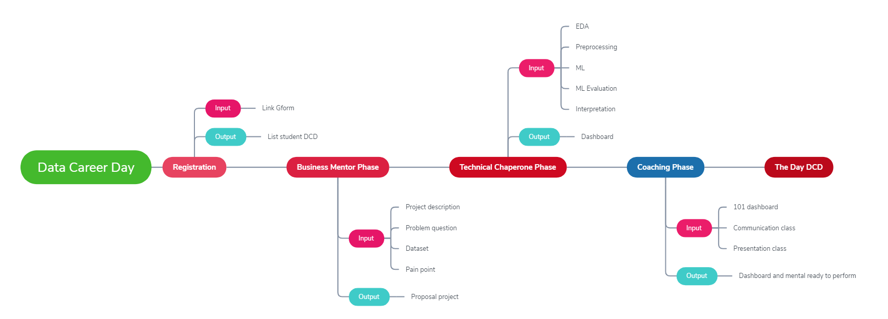

Chapter 5 Data Career Day (DCD)
5.1 Alur Data Career Day

5.2 Pre-Requisite Data Career Day
- Self-Funding pada Academy Reguler/Academy Full Stack
- Total score minimal 85%
- Mengerjakan 5 dari 9 Learn by Building
- Melakukan pendaftaran saat Registration Pace
5.2.1 Registration

- Sebelum Registration
- Hubungi Tata untuk mendapatkan list email student offline yang melakukan pembiayaan sendiri link
- Hubungi Tata untuk mendapatkan list email student online yang melakukan pembiayaan sendiri
- Siapkan timeline dari sosialisasi DCD - hari H
- Siapkan slide sosialisasi DCD link
- Sipkan GForm registration (contoh Gform)
- Siapkan publication proposal example link
- Mendapatkan list Business Mentor (BM) dan Technical Chaperone (TC) (hubungi David)
- Selama Registration
- Menyiapkan draft email registrasi DCD link
- Mengirimkan email reminder penutupan regirtration DCD link
- Membuat Gsheet daftar calon peserta DCD (contoh Gsheet)
- Melakukan briefing mengenai timeline dan workflow DCD kepada mentor Team (mentoring workflow link)
- Setelah Registration
- Melakukan plotting student dengan BM berdasarkan case yang diambil oleh student link
- Mengirimkan email mentor assigning kepada calon peserta yang sudah mendaftar (draft email mentor assigning)
- Invite student pada channel slack Algoritma Alumni sebagai platform komunikasi
5.2.2 Business Mentor Phase
- Membuat sheet weekly report mentor yang dapat ditransfer untuk mentor pada pace berikutnya link
- Membuat rekapan nilai dan LBB student link
- Membuat list eligible student dari registration phase, BM phase, TC phase link
- Melakukan follow-up link proposal project student kepada BM dan diletakkan pada satu sheet report mentor
- Plotting student dengan TC
- Mengirimkan reminder pengumpulan terakhir proposal project dan beberapa persyaratan lain (draft email link)
- Mengirimkan email acceptance dan rejected peserta (draft email acceptance BM & rejected BM)
5.2.3 Technical Chaperone Phase
- Monitoring dan follow-up weekly repost progress student kepada TC link
- Mengirimkan email pendataan CV student online saat minggu pertama TC pace link
- [Optional]Request sesi foto ke Kak Mulia dan Ziqka untuk CV student (Hubungi Kak irvan ketersediaan baju graduate student)
- Melakukan pendataan cv student saat minggu terakhir TC pace link
- Melakukan rekapitulasi dan cross check informasi CV student DCD dan informasi CV student online
- Pada akhir deadline pengumpulan dan pengisian CV (baik student DCD maupun student online), informasikan kepada Kak Mulia untuk proses pembuatan CV
- Kerjasama marketing mengenai vanue DCD dan teknis hari H DCD
5.2.4 Coaching Phase
- Memastikan Veteran yang akan mengisi 101 dashboard, communication class, dan presentation class serta jadwal yang setiap sesi.
- Memastikan setiap peserta hadir dalam setiap sesi.
- Koordinasi dengan marketing untuk GR dan hari-H terkait kesiapan acara
5.2.5 The Day DCD
- Memastikan student ready saat akan tampil
- Memastikan jalannya acara berjalan dengan lancar dari presentasi student hingga speed dating
- Evaluasi dengan seluruh tim